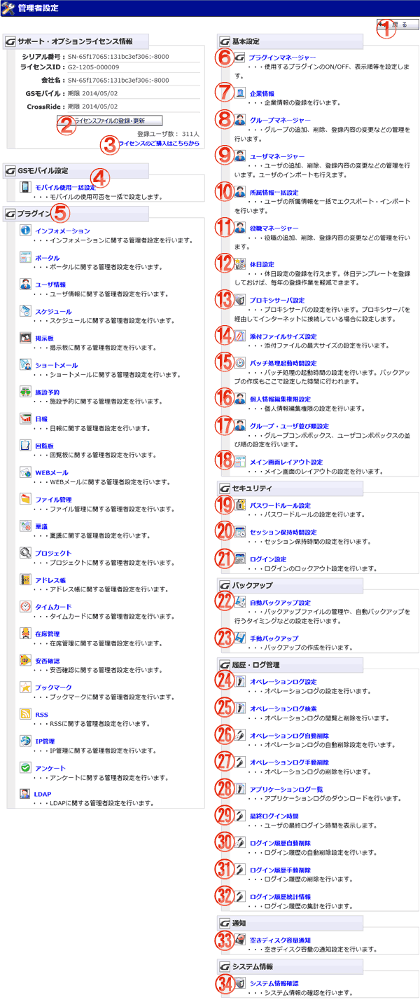

Group Sessionの管理者設定を行う画面です。管理者グループに所属するユーザのみ使用可能です。

機能説明
戻るボタン遷移元の画面へ遷移します。 |
ライセンスファイルの登録・更新ボタンライセンスファイル登録・更新画面へ遷移します。 |
|---|---|
ライセンスのご購入はこちらからライセンスの購入ページへ遷移します。 |
モバイル使用一括設定モバイル使用一括設定画面へ遷移します。 |
プラグイン管理者設定各プラグインの管理者設定画面へ遷移します。 |
プラグインマネージャープラグインマネージャー画面へ遷移します。 |
企業情報企業情報の登録画面へ遷移します。 |
グループマネージャーグループマネージャー画面へ遷移します。 |
ユーザマネージャーユーザーマネージャー画面へ遷移します。 |
所属情報一括設定所属情報一括設定画面へ遷移します。 |
役職マネージャー役職マネージャー画面へ遷移します。 |
休日設定休日設定画面へ遷移します。 |
プロキシサーバ設定プロキシサーバ設定画面へ遷移します。 |
添付ファイル設定添付ファイル設定画面へ遷移します。 |
バッチ処理起動時間設定バッチ処理起動時間設定画面へ遷移します。 |
個人情報編集権限設定個人情報編集権限の設定を行います。 |
グループ・ユーザ並び順設定グループ・ユーザ並び順設定画面へ遷移します。 |
メイン画面レイアウト設定メイン画面レイアウト設定画面へ遷移します。 |
パスワードルール設定パスワードルール設定画面へ遷移します。 |
セッション保持時間設定セッション保持時間設定画面へ遷移します。 |
ログイン設定ログイン設定画面へ遷移します。 |
自動バックアップ設定自動バックアップ設定画面へ遷移します。 |
手動バックアップ手動バックアップ設定画面へ遷移します。 |
オペレーションログ設定オペレーションログ設定画面へ遷移します。 |
オペレーションログ検索オペレーションログ検索画面へ遷移します。 |
オペレーションログ自動削除オペレーションログ自動削除画面へ遷移します。 |
オペレーションログ手動削除オペレーションログ手動削除画面へ遷移します。 |
アプリケーションログ一覧アプリケーションログ一覧画面へ遷移します。 |
最終ログイン時間最終ログイン時間一覧画面へ遷移します。 |
ログイン履歴自動削除ログイン履歴自動削除設定画面へ遷移します。 |
ログイン履歴手動削除ログイン履歴手動削除画面へ遷移します。 |
ログイン履歴統計情報ログイン履歴統計情報画面へ遷移します。 |
空きディスク容量通知ディスク容量管理画面へ遷移します。 |
システム情報確認システム情報確認画面へ遷移します。 |